Un programma di DAMA S.R.L.
Il registro del verde di un territorio in un solo programma: dove sta ogni albero, che cosa è, come sta, che cosa gli è stato fatto e quando. Da quel registro escono le consegne nei formati richiesti dai Capitolati Ambientali Minimi, le perizie di stabilità, i lavori con la loro contabilità, i registri e il portale che i cittadini vedono.
tipi di elemento del Modello Dati ministeriale, già installati
documenti PDF pronti: schede, perizie, verbali, registri, preventivi, SAL, relazioni
formati di scambio: CSV, Excel, GeoJSON, Shapefile e pacchetto CAM
cookie sul portale pubblico: niente da far accettare, niente da dichiarare
Sei voci: Oggi, Patrimonio, Lavori, Documenti, Committenti, Impostazioni. Dal computer e dal telefono.
Rilievo con GPS, fotografie, cartellini, consuntivi e ispezioni. Funziona anche senza rete e si allinea da sola.
Il portale pubblico di ogni Comune, l'area riservata dell'ufficio tecnico, il portale delle imprese appaltatrici.
Elenco con anteprima, mappa a livelli, catalogo ministeriale, importazioni ed esportazioni CAM.
Scheda dell'albero, VTA, perizie validate, scadenzario, bilancio arboreo, benefici ambientali.
Rilievo completo, aree create sul posto, lavori e consuntivi, ditte esterne: anche senza rete.
Le cose da fare in ordine di urgenza, ordini, agenda, Gantt, preventivi, SAL, piani.
Ispezioni, segnalazioni, fitosanitari, patentini, irrigazione, dieci stampe, marche temporali.
Il portale pubblico del Comune, l'area riservata dell'ufficio tecnico, il portale delle imprese.
Ruoli, verifica in due passaggi, storico, formati aperti, server in Italia, come si parte.
Depliant informativo, edizione settembre 2026.DAMA S.R.L. · Roma · info@damagroup.it
Ogni elemento del verde, dall'albero alla panchina, ha una posizione, un tipo del catalogo ministeriale, le sue misure, le fotografie e la sua cronologia.
Ricerca a parole che ignora gli accenti, filtri per committente, area, tipo e stato, scorciatoie "VTA scaduta", "mai valutati", "senza specie". Si sceglie una riga e a fianco compaiono fotografia, misure e cronologia, senza aprire la scheda. Viste salvate, azioni su più schede con anteprima.
Albero dei livelli con i tipi presenti e i loro numeri; chiome in scala reale; siepi, recinzioni e percorsi disegnati per famiglia; etichette con il numero del cartellino; lavori e segnalazioni aperti in evidenza; misura di distanze e superfici; stampa con scala e legenda; coordinate nel sistema nazionale.
Committenti, sedi con codice ISTAT, località e aree disegnate sulla mappa con superfici calcolate da sole; vincoli con il documento allegato; contratti con CIG, CUP, importo e durata. Sfondi propri dell'ente, come l'ortofoto comunale, via WMS.
I 387 tipi del Modello Dati per il censimento del verde urbano, richiesti dalle consegne CAM, già installati. A ogni tipo si aggiungono campi propri, e se serve tipi personalizzati fuori dal tracciato. Cartellino A6 con QR per ogni elemento.
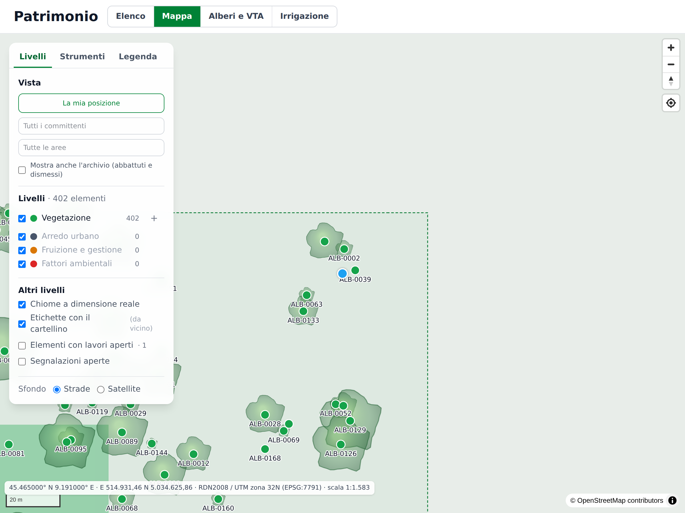
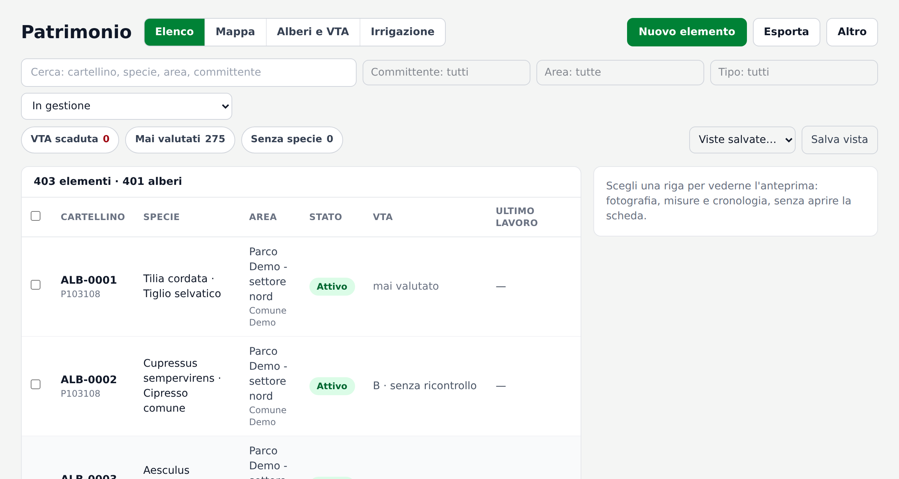
Il dato resta di chi lo ha pagato: formati aperti, nessun archivio chiuso.
Excel o CSV di un censimento esistente, con l'abbinamento delle colonne che si salva per la volta dopo; GeoJSON; consegne CAM di altri fornitori. Prima la prova a vuoto con l'anteprima.
CSV ed Excel dell'elenco così come si vede; GeoJSON e Shapefile; consegna CAM completa con codifiche ministeriali, sistema RDN2008, fotografie e riepilogo dei conteggi.
La scheda si legge prima di modificarla: misure, identità, stabilità, lavori, fotografie e cronologia, una sezione per volta.
Genere, specie, cultivar e nome comune; diametro, circonferenza, altezza, chioma, fusti; età precisa o stimata, stato vegetativo, posizione sociale, bersaglio, sito di crescita; tutori e consolidamenti; messa a dimora e abbattimento. Alberi monumentali, tutelati e dedicati.
Rilievo, modifiche, valutazioni, lavori, segnalazioni e fotografie in fila per giorno, con chi ha fatto che cosa. Una foto eliminata resta visibile nella cronologia, e un abbattimento non cancella la storia.
Difetti per parte della pianta, bersagli, classe di propensione al cedimento, esito, prescrizioni e prossima verifica. Analisi strumentali con referto allegato; intervalli di ricontrollo per classe.
Perizia in PDF con protocollo, data di emissione, fotografie e riga per la firma. Validata si congela: contenuto bloccato, impronta SHA-256, fotografie fissate alla firma. Con la marca temporale diventa una prova datata.
I ricontrolli dovuti diventano ordini di lavoro in agenda, senza doppioni. Bilancio arboreo fra due date secondo la legge 10/2013, con stampa per il consiglio comunale.
Anidride carbonica immagazzinata e assorbita con controvalore economico; ossigeno, polveri sottili, pioggia intercettata. Metodo scritto con i suoi riferimenti; in pubblico solo se l'ente li accende.
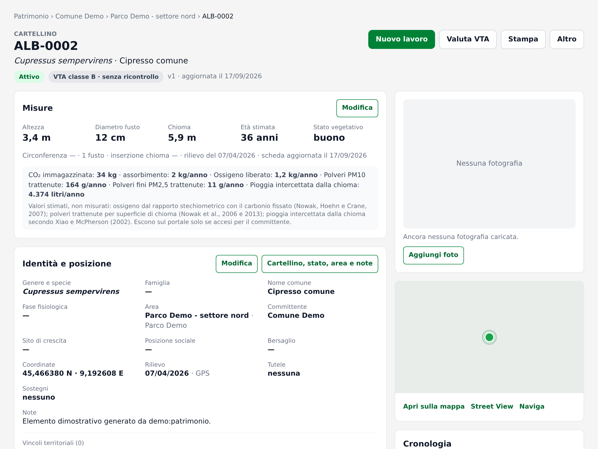
Una perizia validata, ristampata fra un anno, è identica: fotografie comprese.
Lo stato che vedono i cittadini (sano, in cura, da potare, in verifica) non si scrive a mano: nasce dall'ultima valutazione e dai lavori aperti, con una regola sola.
L'app di campo si installa sul telefono dal browser e lavora senza copertura: tutto resta in coda sul dispositivo e parte da solo appena torna la rete.
Posizione GPS con la precisione, tipo, specie cercata per nome comune o botanico, misure e stato vegetativo in un solo passaggio; poi fotografie e cartellino. Il codice del censimento lo assegna il programma.
Se l'area non esiste ancora la si apre dal telefono, anche per un committente nuovo; il perimetro provvisorio resta fuori dal portale finché l'ufficio non lo ridisegna.
Le foto dell'app finiscono nella scheda giusta. Il cartellino si registra con la fotocamera (QR e codici a barre), con un lettore esterno o digitando il codice; l'archivio registra anche tag NFC e RFID.
Ordini della squadra con gli elementi, avvio, sospensione e consuntivo: ore, quantità, mezzi, attrezzature, materiali. Il giro del giorno li ordina per vicinanza e la navigazione porta all'elemento.
Chi lavora per un'impresa affidataria rendiconta dal campo solo i lavori della sua squadra, con foto e consuntivi, senza vedere né toccare il resto del censimento.
La scheda Sync dice quante operazioni aspettano e, se ne viene rifiutata una, il motivo scritto chiaro: si corregge o si scarta, nulla resta a metà.
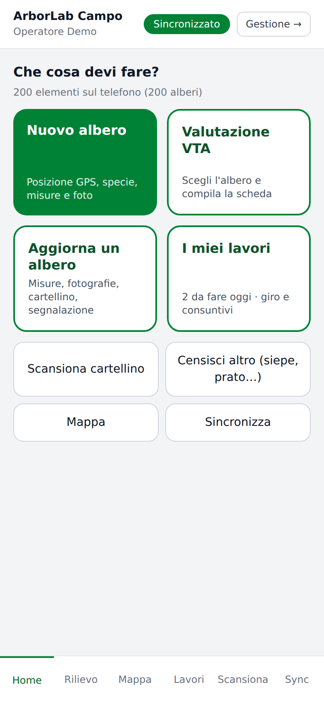
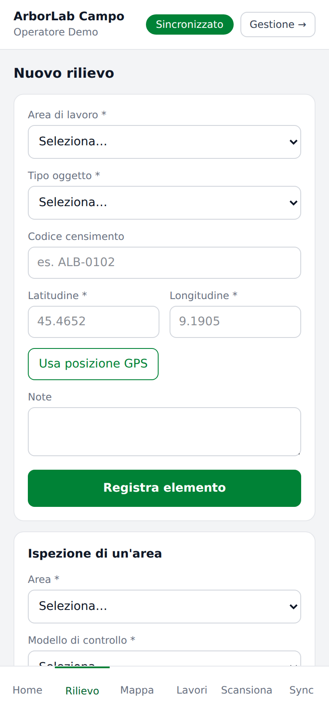
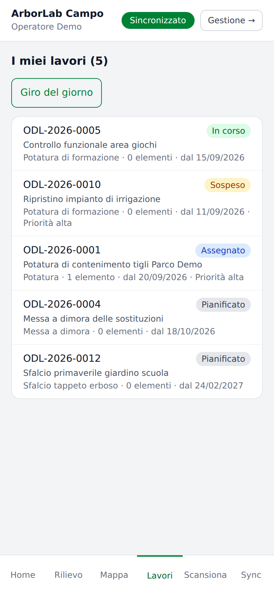
Senza rete si lavora lo stesso: la coda parte da sola appena torna il segnale.
Una giornataCon il Wi-Fi si scaricano aree, catalogo ed elementi della zona.
Posizione, specie, misure, foto, cartellino, consuntivi.
Ogni registrazione va in coda, in ordine.
Sincronizza ora, fino alla scritta "Sincronizzato".
Ogni mattina una lista sola, in ordine di urgenza. Ogni intervento è un ordine con la sua pagina, i suoi elementi, il consuntivo e la cronologia.
Lavori in ritardo e in arrivo, ispezioni scadute, segnalazioni fuori tempo, non conformità, patentini in scadenza, ricontrolli VTA, stagione irrigua, documenti da chiudere e quanto arrivato dal campo, ognuno con il suo pulsante. Le stesse voci per email ogni mattina.
Stato e passaggi ammessi, che cosa si fa, elementi con quantità previste e fatto o da fare, consuntivo valorizzato dal listino, controlli di qualità, mappa degli elementi, documenti collegati e cronologia con ogni cambio di stato.
Elenco con la scorciatoia "in ritardo", agenda per squadra, Gantt, rendiconto per committente e periodo, qualità, preventivi, SAL e piani. Calendario personale su Google Calendar, iPhone e Outlook.
Metri quadrati, metri e numero di pezzi dalla geometria degli elementi, prezzi dal listino con spese generali e oneri di sicurezza. Preventivo in PDF che, accettato, diventa ordine con un clic.
Stati di avanzamento con IVA per riga, validazione, fatturato, incasso e crediti aperti. Piani di manutenzione ricorrenti con finestra stagionale, ordini generati in blocco senza doppioni.
Le squadre interne lavorano per chiunque; un'impresa appaltatrice lavora per il suo committente, vede i suoi ordini e chiede la riprogrammazione con un motivo. Decide l'ufficio.
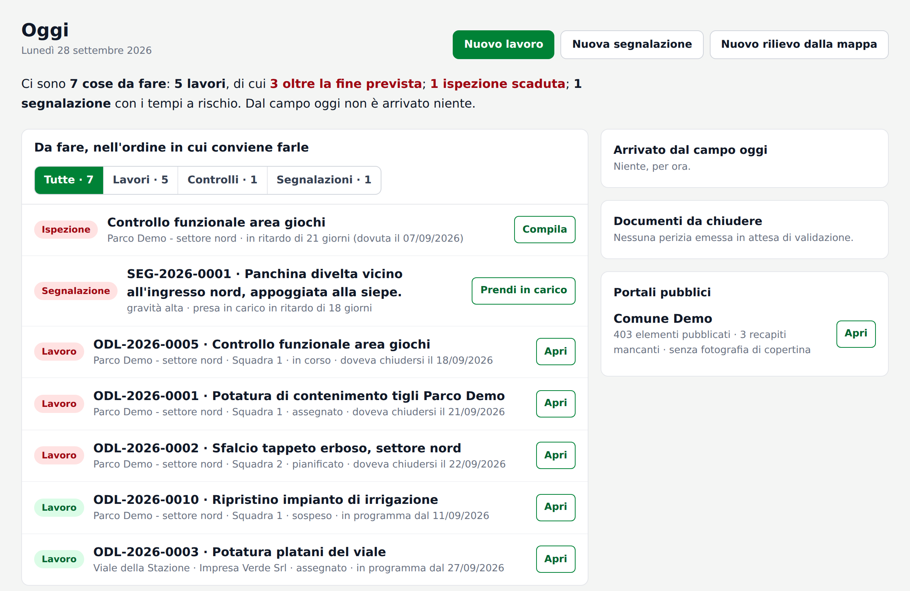
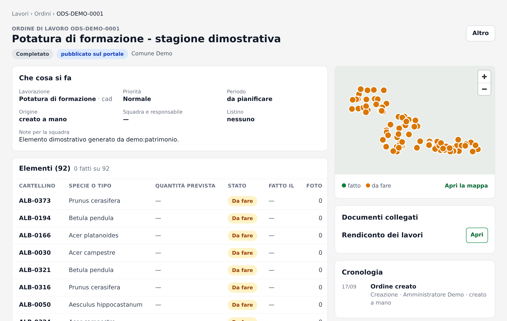
Quello che il programma annuncia in anteprima è quello che fa.
Ispezioni, segnalazioni, trattamenti, abilitazioni e irrigazione nello stesso programma, e tutti i documenti in un posto solo.
Liste di verifica per aree o elementi con periodicità e scadenzario; esito calcolato dalle risposte e non conformità aperte da sole; verbale in PDF. Scheda dell'attrezzo e liste costruite sulla struttura della EN 1176.
Gravità e due scadenze fissate dal programma: presa in carico entro 1-10 giorni, risoluzione entro 3-30. Arrivano dai colleghi, dall'ufficio tecnico o dai cittadini e con un pulsante diventano un ordine.
Quaderno di campagna con prodotto, principio attivo, avversità, dosi, superficie, rientro e chi ha eseguito, stampato per anno. Scadenzario di patentini, abilitazioni, tarature e assicurazioni.
Impianti con settori, programmi e letture del contatore confrontate con la stima: una perdita salta all'occhio. Relazione annuale del verde per committente, scheda della località con planimetrie.
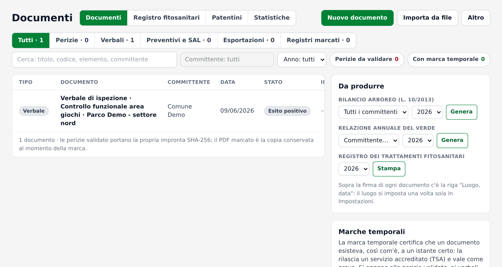
Ogni adempimento ha la sua stampa, con una sola data per foglio e la riga per la firma.
Perizie validate, verbali chiusi e registri si marcano con un servizio accreditato (protocollo RFC 3161): il programma conserva il PDF esatto e la marca, e li verifica. Le marche si acquistano a lotti dal fornitore.
| Stampa | Che cosa contiene | Da dove esce |
|---|---|---|
| Scheda dell'elemento | Dati, misure, foto, posizione; sezioni a scelta | Scheda dell'elemento |
| Cartellino QR | Formato A6 con codice e QR verso la pagina pubblica | Scheda dell'elemento |
| Perizia di stabilità | Protocollo, valutazione, difetti, fotografie, firma | Valutazione VTA |
| Bilancio arboreo | Messi a dimora, abbattuti, sostituiti fra due date | Documenti |
| Verbale di ispezione | Lista di verifica compilata, esito, foto | Ispezione chiusa |
| Registro fitosanitari | I trattamenti dell'anno, anche per una sola area | Documenti |
| Preventivo | Voci, quantità, prezzi, IVA, totale | Lavori, preventivi |
| SAL | Righe, IVA per aliquota, spese generali, totale | Lavori, SAL |
| Scheda della località | Superfici, piante, lavori, planimetrie delle aree | Committenti |
| Relazione annuale | Il lavoro dell'anno per un committente | Documenti |
Nessun dato esce da solo: ogni lavoro, perizia e vincolo si pubblica su decisione dell'ente, e le note interne e le fotografie dei difetti non escono mai.
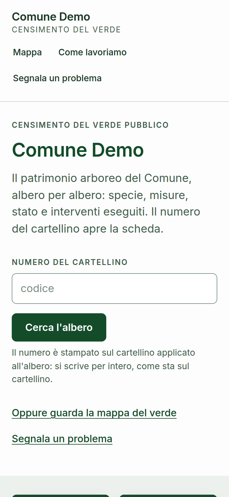
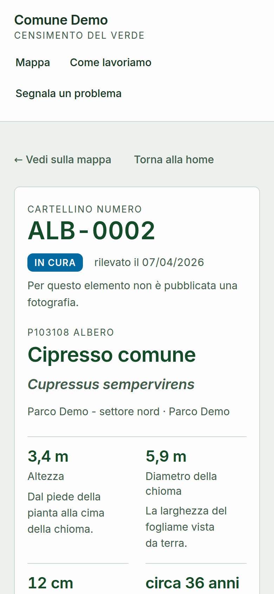
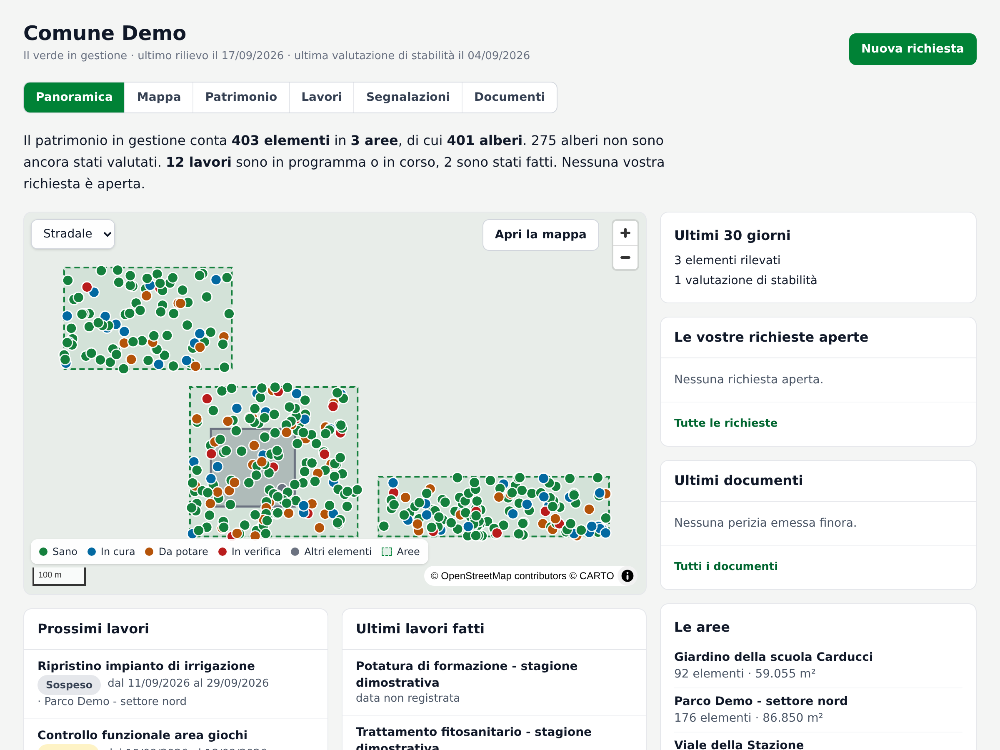
Sei schede: panoramica con i conteggi, mappa con lo stato di ogni elemento, patrimonio con filtri, lavori in programma e fatti con le foto, segnalazioni e richieste con il lavoro che ne è nato, perizie e verbali in PDF. Senza prezzi e mai dati di altri committenti.
Ingresso dedicato per le ditte appaltatrici: solo gli ordini affidati, richiesta formale di riprogrammazione con motivo e data. Decide l'ufficio.
Ogni organizzazione vede solo i propri dati. Ruoli di serie (amministratore, tecnico, operatore, cliente, impresa, esecutore) e ruoli su misura, con i permessi spiegati in italiano.
Verifica in due passaggi con il codice dell'app del telefono, per singolo utente o obbligatoria per tutti; codici di recupero; cambio della propria password.
Cronologia di ogni scheda, registro delle operazioni, eliminazioni che restano in archivio. Due modifiche contemporanee non si sovrascrivono in silenzio.
Formati aperti in uscita (CSV, Excel, GeoJSON, Shapefile, CAM) e importazione dai file di altri. Se cambiate fornitore, il lavoro fatto non si perde.
Nessun caricamento fallisce in silenzio: ogni avviso porta il numero dell'errore e il pulsante Riprova.
Data center italiano, HTTPS automatico, copie di sicurezza giornaliere di dati e fotografie, aggiornamenti compresi.
Organizzazione, utenti e ruoli, dati di chi firma.
Committenti, aree, vincoli; importazione con anteprima.
Con l'app e i cartellini; controllo in ufficio.
Quando il censimento è presentabile e l'ente è d'accordo.
Un Comune di prova con alberi, valutazioni e lavori verosimili: portale e gestionale si vedono prima di avere i vostri dati, e la prova continua con i vostri.
Si parte dal vostro patrimonio: un'area, un viale, un parco. Si importa quello che avete, si accende il portale di prova, si guarda ArborLab con i vostri dati.
DAMA S.R.L. · Via Crescenzio 58, 00193 Roma (RM) · Partita IVA e codice fiscale 17947161000 · REA RM-1751463